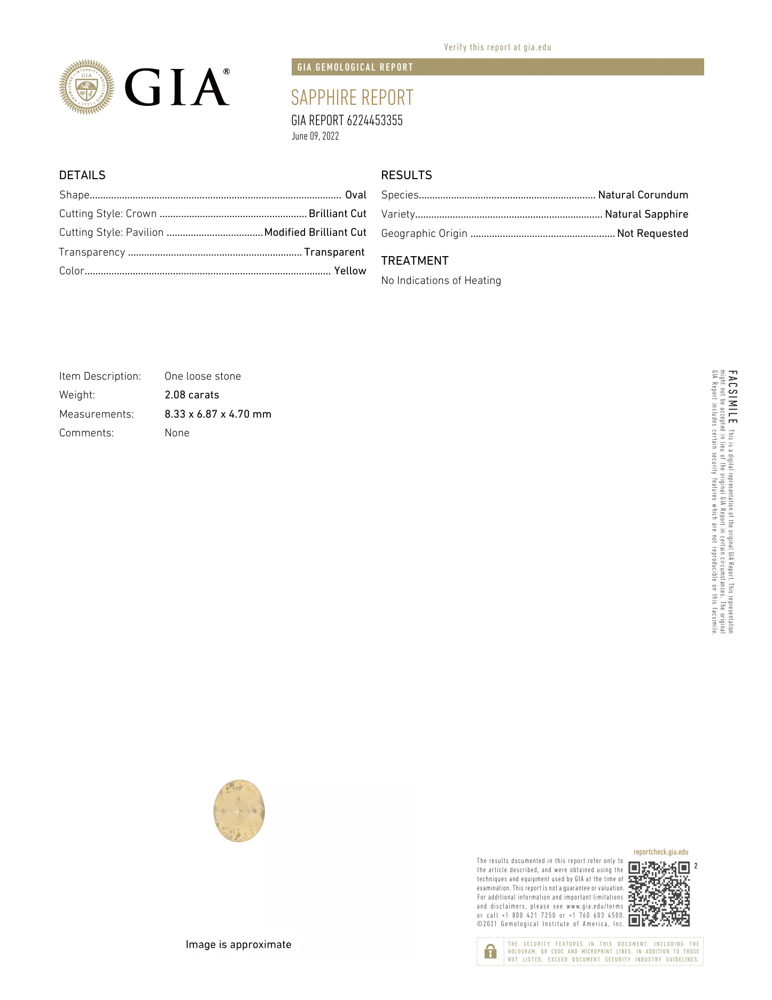

No. 001 · Pendant
- Stone
- Untreated
Yellow sapphire - Cut
- Oval
- Weight
- 2.08 ct
- Origin
- Sri Lanka
- Certificate
- GIA
- Finish
- Rhodium plated
- Metal
- 18k white gold
- Metal weight
- 1.6 g
Certificate
Open PDF

Story
Winter dies for days of spring —
and what stands between is held.
A cradle of white gold petals, in the line of art nouveau,
holds the paradox.
Named Equinoccio for the threshold of the rebirth of nature —
what was crystallized, now beginning to flow.
Made once.
A note on the chain
Pendant only. The chain is yours to choose — its length, its weight, the way it sits — and is priced alongside the piece.